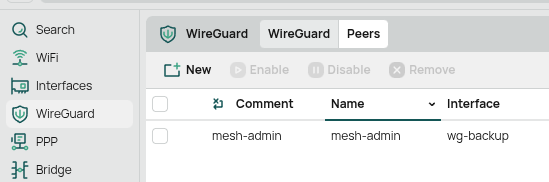
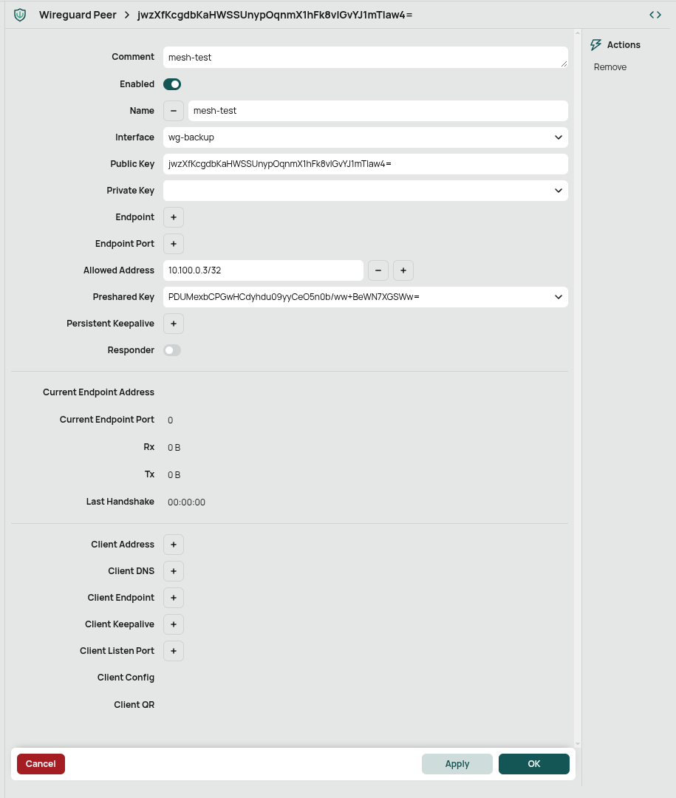
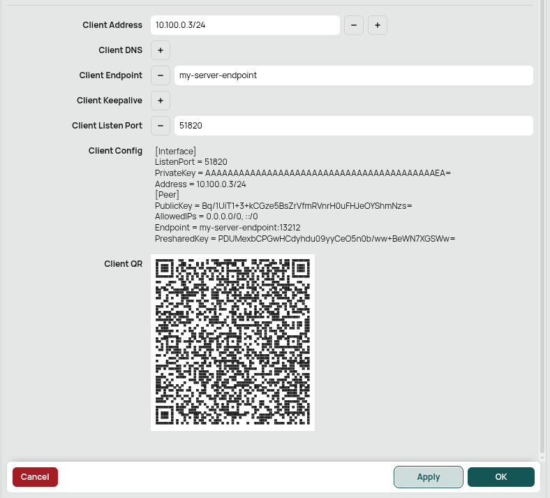

Adding Wireguard Users to a RouterOS v7 Wireguard Server¶
Wireguard is a modern VPN tunnel with an emphasis on simplicity, security, and speed. Some infrastructure in the mesh, like the MikroTik CCR2004-16G-2S+ in the Tucson House Supernode, provides a Wireguard tunnel to help the mesh admin crew access and debug equipment from afar. For MikroTik equipment, this functionality is only available on devices that are running RouterOS v7. In this guide, we'll go through the steps that are needed to add another client to this server, assuming you already have some level of existing access.
Requirements¶
- Access to a linux terminal of some kind
- Windows: install the Windows Subsystem for Linux and perform these tasks from a virtualized Ubuntu environment.
- On your linux environment: install either the
wireguardorwireguard-toolspackage, with the specific package chosen from here - If you're on Ubuntu, you'll want
wireguard - If you're on Fedora, you'll want
wireguard-tools
Once you have the right software installed, the wg command will be available in your terminal similar to the following:
admin@mesh-box:~$ wg --help
Usage: wg <cmd> [<args>]
Available subcommands:
show: Shows the current configuration and device information
showconf: Shows the current configuration of a given WireGuard interface, for use with 'setconf'
set: Change the current configuration, add peers, remove peers, or change peers
setconf: Applies a configuration file to a WireGuard interface
addconf: Appends a configuration file to a WireGuard interface
syncconf: Synchronizes a configuration file to a WireGuard interface
genkey: Generates a new private key and writes it to stdout
genpsk: Generates a new preshared key and writes it to stdout
pubkey: Reads a private key from stdin and writes a public key to stdout
You may pass `--help' to any of these subcommands to view usage.
Key Generation¶
Wireguard tunnels are based on public key cryptography. Creating a new client configuration file involves generating a new private key, public key, and, because we like to keep things a bit extra 💅, a preshared key. This sequence of steps will look like the following:
In practice, Never use a private key that is exposed in documentation like this. Ideally, never expose your private key at all. It's called private for a reason.
# 1. Ensure your umask is set to something secure.
# This helps ensure that the file we create here is not readable by any user on your machine
admin@mesh-box:~$ umask 077
# 2. Generate your private key
admin@mesh-box:~$ wg genkey > my-wireguard-key
# This value is private, keep it well-protected!
admin@mesh-box:~$ cat my-wireguard-key
sGg9iLeI2hKbOER69FkhBuE2vA76CaEPsIPrJH7nGGI=
# 3. Compute the corresponding public key and save it to a file
admin@mesh-box:~$ wg pubkey < my-wireguard-key > my-wireguard-key.pub
admin@mesh-box:~$ cat my-wireguard-key.pub
jwzXfKcgdbKaHWSSUnypOqnmX1hFk8vIGvYJ1mTIaw4=
# 4. Generate a new preshared key that we will use to enhance the security of our connection
admin@mesh-box:~$ wg genpsk > my-wireguard-psk
admin@mesh-box:~$ cat my-wireguard-psk
PDUMexbCPGwHCdyhdu09yyCeO5n0b/ww+BeWN7XGSWw=
At this stage, you have now produced:
- A private key that will never leave your machine. Instead, it will use this key to authenticate itself with the remote Wireguard server.
- A public key that we will share with the remote Wireguard server and use to register your machine as a client.
- A preshared key that adds extra resilience to the security of the Wireguard connection, and it's easy to incorporate.
Our two remaining goals are to:
- Add a configuration to your remote Wireguard server that allows your new client to connect.
- Add a configuration to your local Wireguard instance that allows you to connect to your server.
Wireguard Server Configuration¶
On your RouterOS interface, login with your administrator credentials, switch to the Advanced view in the top right if needed, navigate to the Wireguard menu, and click the Peers button:

Next, click New, and fill out the form as follows, providing the public key and preshared key, but leaving the private key blank.
The Allowed Address needs to be assigned to one of the IP addresses in the Wireguard server's IP range that is not currently used by any other client.
In this case, 10.100.0.3/32 was available.

Hit Apply, and the new peer will be added to the Wireguard Server's list of peers.
Generating a Wireguard Client Configuration¶
If you are just trying to connect to Mesh infrastructure using Wireguard, you can ask someone with permissions to generate a configuration file for you. These instructions cover how to generate the configuration from within the RouterOS administration interface on the remote device.
Next, we need to generate the configuration file. Luckily, we can use the RouterOS peer menu to do this as well. On the lower end of our same peer configuration, there is a section to fill out Client information.
A minimal example is shown below:

The following things should be considered as you're completing your client configuration:
- The
Endpointshould be configured (via a DNS hostname, a static IP address, etc) to tell your computer "where is the server located?" when it tries to connect. For many mesh endpoints, we have public IPv4 addresses that we are assigned from our upstream network provider and use those. - If you want to route DNS requests to a host on this network, set the
Client DNSto a host that can handle them on this network. - Pay attention to the CIDR suffix we're giving to the address in the Client configuration. We are specifying the same IP address as above, but we would like to allow a larger pool of network traffic through our interface (
/24subnet vs/32subnet). - You will need to replace the empty "AAAAAAA" PrivateKey with your real one because we didn't fill out the private key in the section above.
- Finally, you may wish to make changes to the
AllowedIPsto not route all your network traffic over this interface but rather only specific subnets.
You can now either copy and paste the generated configuration text into a text file, dump it directly into an Empty Tunnel in your Wireguard desktop application, or scan the QR code from your mobile device.
Other Example Wireguard Client Configurations¶
If you don't have access to the MikroTik router to generate a configuration file, here is a template that can be used that is otherwise largely equivalent to what MikroTik generates:
[Interface]
ListenPort = 51820
PrivateKey = PLACEHOLDER FOR PRIVATE KEY
# Client address - change me
Address = 10.100.0.X/32
# Route DNS lookups to the mesh to resolve "website.mesh" URLs
DNS = 10.69.0.49
[Peer]
PublicKey = Bq/1UiT1+3+kCGze5BsZrVfmRVnrH0uFHJeOYShmNzs=
AllowedIPs = 0.0.0.0/0, ::/0
Endpoint = 204.17.32.58:13212
PresharedKey = PLACEHOLDER FOR PRESHARED KEY
If your client device is a systemd-based Linux laptop or something similar (or at least uses systemd-resolved for DNS), and you want a fancier config that doesn't store keys directly in the file, you can use a setup like this. See man 8 wg and man 8 wg-quick for more information:
It has the benefit that your private key and psk don't need to be hardcoded into your configuration file and are instead loaded from disk.
[Interface]
# Client address - change me
Address = 10.100.0.X/32
# Set private key by reading from a file in /etc/wireguard/tucsonhouse/private
PostUp = wg set %i private-key /etc/wireguard/tucsonhouse/private
# Set PSK - this command needs to have the pubkey of your peer specified as well
# PSK is read from /etc/wireguard/tucsonhouse/psk
PostUp = wg set %i peer Bq/1UiT1+3+kCGze5BsZrVfmRVnrH0uFHJeOYShmNzs= preshared-key /etc/wireguard/tucsonhouse/psk
# Route DNS lookups for ONLY .mesh domains through to 10.69.0.49
PostUp = resolvectl dns %i 10.69.0.49; resolvectl domain %i ~mesh
[Peer]
Endpoint = 204.17.32.58:13212
# By default, 0.0.0.0/0 routes ALL of your traffic over this interface (you use the mesh as a full "VPN")
# AllowedIPs = 0.0.0.0/0
# If you want a more nuanced configuration that only routes mesh-specific IP addresses over the tunnel and leaves the rest of your traffic alone, you can do something like this:
AllowedIPs = 10.100.0.0/24, 10.69.0.0/16, 10.96.0.0/16, 10.10.10.0/24
PublicKey = Bq/1UiT1+3+kCGze5BsZrVfmRVnrH0uFHJeOYShmNzs=
If you put this configuration file in /etc/wireguard/wg-tucsonhouse.conf, you can activate the configured Wireguard interface with the command sudo wg-quick up wg-tucsonhouse.